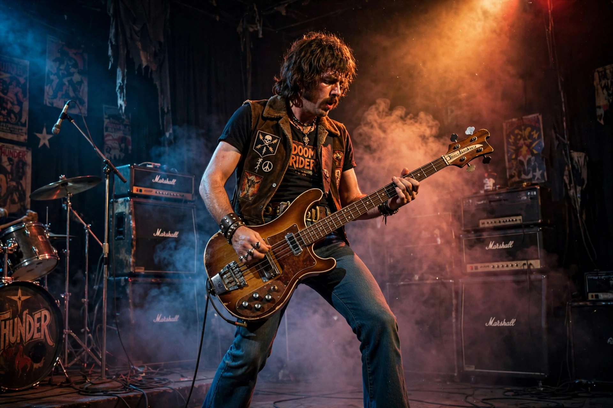

| Geezer Butler | |
|---|---|
 | |
| Born | Terence Michael Joseph Butler, 17 July 1949, Aston, Birmingham, England |
| Occupation | Musician, songwriter |
| Instruments | Bass guitar |
| Years active | 1966–present |
| Associated acts | Black Sabbath, Heaven & Hell, GZR, Ozzy Osbourne |
Terence Michael Joseph "Geezer" Butler (born 17 July 1949) is an English musician, best known as the bassist and primary lyricist of the pioneering heavy metal band Black Sabbath. He is regarded as one of the most influential bassists in heavy metal, notable for his melodic, wah-driven playing and his down-tuned, doom-laden lines written in partnership with guitarist Tony Iommi.
Butler formed his first band, the Ruums, and then the Polka Tulk Blues Band with Iommi, singer Ozzy Osbourne and drummer Bill Ward. Renamed Black Sabbath in 1969 — Butler suggested the name after a Boris Karloff horror film — the band released its self-titled debut in 1970, effectively inventing heavy metal with tracks such as "N.I.B.", whose bass intro showcased Butler's style. As principal lyricist he wrote much of the band's occult and socially conscious material, including "War Pigs", "Iron Man" and "Children of the Grave".
Butler left briefly in the mid-1980s, formed the Geezer Butler Band, then returned for Dehumanizer (1992) with Ronnie James Dio. He later played with Ozzy Osbourne's solo band, released solo albums under the name GZR, and performed with Heaven & Hell (2006–2010), the Dio-fronted incarnation of Sabbath. He played on Black Sabbath's final album 13 (2013) and its farewell tour, The End (2016–17), and returned for the band's final concert, "Back to the Beginning", in Birmingham in July 2025. Butler is a long-time vegan and animal-rights supporter; his memoir Into the Void appeared in 2023.
Bill Ward · Black Sabbath · Heavy metal music
From Wikipedia, the free encyclopedia (recreated from memory).